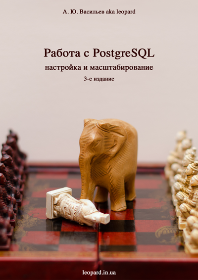

Перед вами справочное пособие по настройке и масштабированию PostgreSQL. В книге исседуются вопросы по настройке производительности PostgreSQL, репликации и кластеризации. Изобилие реальных примеров позволит как начинающим, так и опытным разработчикам быстро разобраться с особенностями масштабирования PostgreSQL для своих приложений.